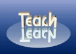

| CS G 107: Program Design Paradigms |  | ||||||||||||
CS G 107 is the mandatory introductory course for students in the MS program. The course has two distinct objectives. First, it will ensure that all MS students have the same background in designing programs. This encompasses the entire design cycle, from problem analysis to the development of test suites. Second, the course will also introduce students to programming as a people discipline. Students will work in pairs, present code to panels, sit on review panels, and learn to cope with an evolving code basis. The course will require a serious commitment to practical hands-on programming from the student. The course comes with a lab course, called CS G 108. Students must register for both courses to receive credit.
These and other frequently asked questions are answered in the FAQ list; see tab on the left. | ||||||||||||||
| last updated on Tue Jun 9 22:21:18 EDT 2009 | generated with PLT Scheme |